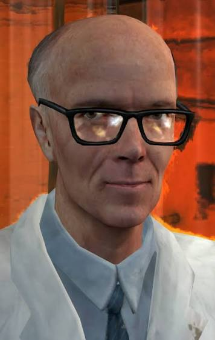

С
Глубины
Лабаротории
С
Глубины
Лабаротории
Несколько способов для прохождения в лабароторию
Спускаться в недра лаборатории — тяжело и страшно. Даже если это просто рядовой забор образцов. Или калибровка поля. Например, прежде чем запустить сегодняшний эксперимент, старший научный сотрудник перепроверил все датчики, позвонил в отдел безопасности узнать, как поживают хедкрабы в вольере (окей, это правда важно), 10 минут ходил туда-сюда по реакторному залу, протёр пыль с консолей и перепроверил показатели ещё раз, потому что они слегка плавали. Всё это время с монитора на него смотрел график аномальной активности
Сама по себе лаборатория, конечно, не страшная. Боязнь чаще всего масштаба последствий, которая может вызывать ошибки. Усилий, той точки невозврата, которую нужно преодолеть, чтобы переключить мозг из состояния паники в состояние холодного расчёта. Причин, почему первые шаги даются так сложно, может быть очень много. Вот основные:
Чаще всего страх резонансного каскада появляется не из-за чего-то одного, а из-за совокупности нескольких факторов. Вот что может помочь:

Сделать проверку рутиной «Проверять показатели детекторов нужно каждый день, подобно тому как инженер непременно должен каждый день без пропусков по нескольку часов калибровать своё оборудование. В противном случае ваша интуиция неизбежно оскудеет, и вы пропустите начало каскада. А что проверять? Всё подряд. Если у вас в данное время нет никакой неисправности, то проверяйте просто всё, что видите»
Уже от одного ощущения, что предстоит работа над всей лабораторией, может пропасть всякое желание за неё браться. В такие моменты хорошо помогает загнать задачу в рамки — в прямом смысле. Сосредоточьтесь на том, чтобы проверить только один отсек. Что дальше — пока неважно.
Любого — без шуток. Если не верите нам, посмотрите, например, как Гордон Фримен начинает свой день в «Лямбда-комплексе». Можно и менее радикально. Главное, чтобы пульт управления начал мигать индикаторами. Получится своеобразная ловушка для мозга: он видит, что вы уже начали что-то делать, и ему становится легче войти в состояние потока